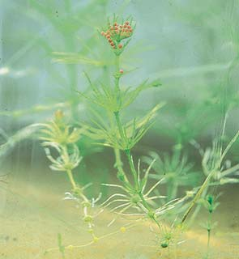

26 Protistas
537
CONCEPTOS CLAVE
26.1 Los protistas son un grupo diverso de organismos eucariotas que varían en plan corporal (unicelular, colonia, cenocítico, multicelular), método de motilidad (seudópodos, cilios, fl agelos), tipo de nutrición (autótrofos, heterótrofos) y modo de reproducción (asexual, sexual). 26.2 Mucha incertidumbre rodea la evolución eucariota, pero los organelos eucariotas como los cloroplastos probablemente descienden de células engullidas que sobrevivieron y se convirtieron en organelos. La evidencia científi ca actual apoya la división de los protistas y otros eucariotas (plantas terrestres, hongos y animales) en cinco “supergrupos” informales. 26.3 Los excavados son protistas unicelulares con mitocondrias atípicas enormemente modifi cadas; obtienen su nombre porque muchas tienen un surco oral profundo, o excavado. 26.4 Los cromalveolados son un supergrupo de protistas diversos que pudieron originarse como resultado de endosimbiosis secundaria en la que una célula ancestral engulló una alga roja. 26.5 Los rizarios son un supergrupo de células ameboides que con frecuencia tienen testas (conchas) a través de las cuales se extienden proyecciones citoplasmáticas; foraminíferos, actinópodos y ciertas amebas sin concha son rizarios. 26.6 Los arqueplástidos incluyen algas rojas, algas verdes y plantas terrestres, todas las cuales tienen plástidos limitados por membranas externas e internas. 26.7 Los unicontos incluyen amebozoos y coanofl agelados, así como hongos y animales.
L
os protistas son un grupo informal de organismos eucariotas principalmente acuáticos con diversas formas corporales, tipos de reproducción, modos de nutrición y estilo de vida. Los protistas, que incluyen algas, oomicetos, mohos mucilaginosos y protozoarios, son organismos unicelulares, coloniales o multicelulares simples que tienen una organización celular eucariota (vea la fotografía). La palabra protista , del griego “lo primerísimo”, refl eja la idea de que los protistas fueron los primeros eucariotas en evolucionar. Los protistas son miembros del dominio Eukarya, el tercer dominio en el árbol de la vida. (Recuerde los tres dominios presentados en la fi gura 23-2). Las células eucariotas son características de los protistas, así como de los complejos organismos multicelulares que pertenecen a los reinos Fungi, Animalia y Plantae. Sin embargo, el tener una estructura celular eucariota diferencia con claridad los protistas de los miembros de los dominios Bacteria y Archaea. Recuerde del capítulo 4 que, a diferencia de las células procariotas, las células eucariotas tienen núcleos y otros organelos encerrados en membrana, como mitocondrias y plástidos, 9 + 2 fl agelos, y múltiples cromosomas en los que ADN y proteínas forman un complejo llamado cromatina. La reproducción sexual, la meiosis y la mitosis también son características de los eucariotas. Hasta recientemente, todos los protistas se clasifi caron como el reino Protista, pero esta clasifi cación fue por defecto: los protistas incluían a cualquier eucariota que no fuera planta terrestre, hongo o animal. Principalmente los datos moleculares recientes, han clarifi cado muchas relaciones evolutivas entre eucariotas, el reino Protista ya no se reconoce como clado. Aunque se han logrado grandes avances en la comprensión de las relaciones evolutivas entre protistas, muchas relaciones siguen siendo inciertas.
Micrografía óptica (MO) de una diatomea marina. La diatomea ampliamente difundida Guinardia striata forma colonias compuestas de cadenas de células en espiral.
Wim van Egmond/Visuals Unlimited, Inc.
538 Capítulo 26
En la actualidad, los biólogos reconocen docenas de taxones protista, que, junto con otros eucariotas, se clasifi can en cinco “supergrupos”. La consideración de todos los taxones protista está más allá del ámbito de este libro, pero se estudiarán varios ejemplos representativos de cada supergrupo y se proporcionarán elementos de comprensión acerca de cómo pudieron evolucionar tan diversos eucariotas.
26.1 DIVERSIDAD EN LOS PROTISTAS
OBJETIVO DE APRENDIZAJE
1 Discutir en términos generales la diversidad inherente en protistas, incluidos medios de locomoción, modos de nutrición, interacciones con otros organismos, hábitats y modos de reproducción.
Debido a su enorme número, los protistas son cruciales para el equilibrio natural del mundo viviente. Los protistas son una fuente importante de alimento para otros organismos, y los protistas fotosintéticos suministran oxígeno a los ecosistemas acuático y terrestre. Ciertos protistas son económicamente importantes, y otros producen enfermedades devastadoras como la malaria. El plan corporal varía considerablemente entre protistas. La mayoría de los protistas son unicelulares , y cada célula forma un organismo completo capaz de realizar todas las funciones características de la vida. Algunos protistas forman colonias , grupos de células débilmente conectadas; algunas son cenocíticas , y consisten en una masa multinucleada de citoplasma; y algunas son multicelulares , compuestas de muchas células. A diferencia de los animales, plantas y muchos hongos eucariotas, la mayoría de los protistas multicelulares tienen formas corporales relativamente simples sin tejidos especializados. El tamaño y la complejidad estructural no son las únicas características variables de los protistas. Durante el curso de su larga historia evolutiva, los protistas evolucionaron diversidad en sus medios de locomoción, formas de obtener nutrientes, interacciones con otros organismos, hábitats y modos de reproducción. Los protistas, cuya mayoría son mótiles en algún punto de su ciclo de vida, tienen varios medios de locomoción. Algunos se mueven al empujar extensiones citoplásmicas ( seudópodos ) a lo largo del borde frontal y retraer el citoplasma que arrastran detrás, como hace una ameba. Otros
protistas se mueven al fl exionar células individuales; al deslizarse sobre superfi cies; al ondular cilios , cortos organelos parecidos a cabellos; o al azotar fl agelos , largos organelos parecidos a látigos. Algunos protistas tienen dos o más medios de locomoción; por ejemplo, tanto fl agelos como seudópodos. Los métodos de obtención de nutrientes difi eren ampliamente entre los protistas. La mayoría de las algas son autótrofas y fotosintéticas como las plantas ( FIGURA 26-1a ). Algunos protistas heterótrofos obtienen sus nutrientes mediante absorción, como los hongos, mientras que otros parecen animales en cuanto a que ingieren alimento. Algunos protistas cambian sus modos de nutrición y son autótrofos en ciertas épocas y heterótrofos en otras. Aunque muchos protistas son de vida libre, otros forman asociaciones simbióticas estables con organismos no relacionados. Estas asociaciones íntimas varían desde el mutualismo , una asociación más o menos igualitaria donde ambos participantes se benefi cian; al comensalismo , donde un participante se benefi cia y el otro no resulta afectado; hasta el parasitismo , donde un participante (el parásito) vive sobre o en otro (el huésped) y depende metabólicamente de él (vea el capítulo 54). Algunos protistas parásitos son importantes patógenos (agentes causantes de enfermedades) de plantas o animales. A lo largo de este capítulo se describirán ejemplos específi cos de asociaciones simbióticas que involucran protistas. La mayoría de los protistas son acuáticos y viven en el océano o en corrientes de agua dulce, lagos y estanques ( FIGURA 26-1b ). Constituyen la mayor parte del plancton , los organismos fl otantes, con frecuencia
Pared celular
Flagelos
Núcleo
Cloroplasto
Gránulo de almidón
- Chlamydomonas es un organismo fotosintético con dos flagelos y un cloroplasto con forma de copa.
Amoeba Seudópodos
Didinium
Euglena Euglena Euglena
Chlamydomonas Chlamydomonas Chlamydomonas
Scenedesmus Scenedesmus Scenedesmus Volvox
Flagelos
Spirogyra Spirogyra Spirogyra
Paramecium
Stentor
Cilios Flagelo
Vorticella
Pediastrum
Cilios
Cilios
- Los protistas en una gota de agua en un estanque. Se muestran varios modos de locomoción.
FIGURA 26-1 Protistas
Protistas 539
La evolución de los cloroplastos es más compleja, dado que probablemente hubo varios eventos endosimbióticos ( FIGURA 26-2 ). La evidencia molecular apoya la visión de que la incorporación de una antigua cianobacteria dentro de una célula huésped, conocida como endosimbiosis primaria , resultó en los cloroplastos de las algas rojas, algas verdes y plantas terrestres de hoy. (La célula huésped era eucariota porque las mitocondrias casi seguramente evolucionaron antes que los cloroplastos). Los biólogos plantean la hipótesis de que estos cloroplastos, que están encerrados por dos membranas externas, más tarde proporcionaron a otros eucariotas sus cloroplastos durante endosimbiosis secundaria . En la evolución eucariota ocurrió con frecuencia endosimbiosis secundaria, como evidencia la presencia de membranas de cloroplasto adicionales. Por ejemplo, tres membranas envuelven los cloroplastos de euglenoides y dinofl agelados, y cuatro membranas rodean los cloroplastos de diatomeas, algas doradas y algas pardas. Comprender cómo se originaron estas membranas es un aspecto esencial de la endosimbiosis serial, y muchos investigadores estudian el origen de los cloroplastos en diferentes organismos. Incluso los protistas no fotosintéticos pueden contener reliquias de cloroplasto de eventos endosimbióticos secundarios. Los apicomplejos (protistas como el Plasmodium , que causa malaria) tienen un cloroplasto no funcional rodeado por cuatro membranas. Algunos investigadores plantean la hipótesis de que los medicamentos que inhiben los cloroplastos también pueden matar Plasmodium . Este cloroplasto no funcional, que probablemente derivó de un dinofl agelado, puede tener cierto potencial médico en el tratamiento de la malaria.
Comienza a surgir un consenso acerca de la clasifi cación de eucariotas
Los científi cos revaloran las relaciones evolutivas entre los eucariotas conforme se vuelve disponible evidencia adicional. Dos tipos de investigación moderna, análisis molecular y estudios ultraestructurales, contribuyen sustancialmente al entendimiento científi co de las relaciones fi logenéticas entre protistas. Inicialmente, se obtuvieron datos moleculares para el gen que codifi ca la pequeña subunidad de ARN ribosómico en diferentes eucariotas (SSU ARNr; vea el capítulo 25). Más recientemente, los biólogos compararon otros genes nucleares, muchos de los cuales codifi can proteínas, en diferentes taxones de protista. La ultraestructura se refi ere a los detalles fi nos de la estructura celular revelados por microscopia electrónica. En muchos casos, los datos ultraestructurales completan los datos moleculares. La microscopia electrónica revela patrones estructurales similares entre aquellos taxones de protista que la evidencia molecular comparativa sugiere que son monofi léticos ; esto es, evolucionaron a partir de un ancestro común (véase el capítulo 23). Por ejemplo, los datos moleculares y ultraestructurales sugieren que los oomicetos, diatomeas, algas doradas y algas pardas, son taxones protista que a primera vista parecen compartir pocas características, son un grupo monofi lético. Dada la diversidad en datos ultraestructurales y moleculares de protistas, los biólogos consideran a los protistas como un grupo parafi lético ; esto es, los protistas contienen algunos de los descendientes de un ancestro eucariota común. Los análisis moleculares y ultraestructurales siguen ayudando a los biólogos a clarifi car las relaciones entre los varios fi los de protistas y entre los protistas y los otros reinos eucariotas. Los biólogos usan estos datos para desarrollar varios esquemas de clasifi cación. Un esquema actual, que se adoptó en esta edición, divide los protistas y otros eucariotas (plantas terrestres, hongos y animales) en cinco supergrupos informales ( FIGURA 26-3 y TABLA 26-1 ).
microscópicos, que habitan en aguas superfi ciales y son la base de la red alimenticia en los ecosistemas acuáticos. Otros protistas acuáticos se fi jan a rocas u otras superfi cies en el agua. Incluso los protistas parásitos son acuáticos, porque viven en los ambientes acuosos de los fl uidos corporales de otros organismos. Los protistas terrestres están restringidos a lugares húmedos como suelo, grietas en la corteza y mantillo de hojas. La reproducción es variada entre protistas. Casi todos se reproducen asexualmente, y muchos también se reproducen sexualmente. Sin embargo, la mayoría de los protistas no desarrollan órganos reproductores multicelulares, ni forman embriones de la forma en que hacen organismos más complejos.
Repaso
■ ¿Cómo varían los protistas en sus medios para obtener nutrientes?
■ ¿Cuáles son algunas de las formas como los protistas interactúan con otros organismos?
26.2 ¿CÓMO EVOLUCIONARON LOS EUCARIOTAS?
OBJETIVOS DE APRENDIZAJE
2 Discutir la hipótesis de endosimbiosis serial y explicar brevemente parte de la evidencia que la apoya. 3 Describir los tipos de datos que usan los biólogos para clasifi car eucariotas.
Durante muchos años los biólogos han planteado la hipótesis de que los protistas fueron las primeras células eucariotas y que evolucionaron a partir de procariotas ancestrales. Sin embargo, mientras más se estudian los orígenes eucariotas, más incertidumbre existe. Algo que se puede decir con absoluta certeza es que la evolución de los eucariotas fue un proceso complejo. Los eucariotas quizá aparecieron en el registro fósil tan temprano como hace 2.2 mil millones de años. Aparte de algunos protistas con conchas duras, como diatomeas y foraminíferos, la mayoría de los protistas antiguos no dejaron muchos fósiles porque sus cuerpos eran demasiado blandos para dejar trazas permanentes. Los estudios evolutivos de los protistas se enfocan principalmente en comparaciones moleculares y estructurales de organismos actuales, que contienen muchas pistas acerca de su historia evolutiva.
Mitocondrias y cloroplastos probablemente se originaron a partir de endosimbiontes
A lo largo de la historia evolutiva, un organismo engulle a otro para benefi cio de ambos. De acuerdo con la hipótesis de endosimbiosis serial , ciertos organelos eucariotas, particularmente mitocondrias y cloroplastos, surgieron a partir de relaciones simbióticas entre células más grandes y bacterias más pequeñas que se incorporaron y vivieron dentro de ellas. (Puede repasar la endosimbiosis serial en la fi gura 21-8). Los biólogos celulares plantean la hipótesis de que las mitocondrias se originaron a partir de bacterias aerobias. Estudios de ADN mitocondrial sugieren que se trata de un resto del pasado de la mitocondria, cuando era un organismo independiente. Secuencias de ARN ribosómico (ARNr) de mitocondrias coinciden estrechamente con los ARNr encontrados en bacterias púrpuras, lo que sugiere que las antiguas bacterias púrpuras fueron los ancestros de las mitocondrias.
540 Capítulo 26
26.3 EXCAVADOS
OBJETIVO DE APRENDIZAJE
4 Resumir las características básicas de los excavados y distinguir entre diplomonados, parabasálidos y euglenoides.
Los excavados son un grupo diverso de protistas unicelulares con fl agelos. Estos protistas se llaman así porque muchos tienen un profundo surco oral, o excavado . A diferencia de otros protistas, los escavados tienen mitocondrias atípicas, enormemente modifi cadas. Muchos excavados son endosimbiontes y viven en ambientes anóxicos (sin oxígeno). Estos excavados no realizan respiración aeróbica; obtienen energía por la vía anaeróbica de glucólisis (presuntamente mediante fermentación).
Este esquema de clasifi cación es muy diferente de la clasifi cación eucariota usada en la última edición, y seguramente en futuras ediciones se reportarán más cambios. La ciencia es una labor continua, y el conocimiento actual siempre debe revalorarse a la luz de los nuevos descubrimientos. Ahora que tiene una comprensión básica de la evolución de los protistas y otros eucariotas, examine los protistas representativos dentro de los cinco supergrupos.
Repaso
■ ¿Cómo explica la endosimbiosis serial el origen de los cloroplastos?
■ ¿Qué tipos de evidencia científi ca apoyan la hipótesis de que los protistas son un grupo parafi lético?
Los científi cos plantean la hipótesis de que los plástidos evolucionaron por endosimbiosis tanto primaria como secundaria.
Cianobacteria (ancestro de cloroplasto)
ADN bacterial
Célula eucariota con mitocondrias y cloroplastos (alga roja)
Cloroplasto con dos membranas
ADN de cloroplasto
Célula eucariota con mitocondria
Núcleo
Mitocondria
Célula eucariota con mitocondrias
Célula eucariota con mitocondrias y cloroplastos (dinoflagelado)
Cloroplasto con tres membranas
Endosimbiosis secundaria
Endosimbiosis primaria
En la endosimbiosis primaria, una célula eucariota primitiva engulló una cianobacteria, que sobrevivió y evolucionó en un cloroplasto. La célula primitiva se muestra como una célula eucariota porque las mitocondrias casi seguramente evolucionaron antes que los cloroplastos.
En un evento endosimbiótico secundario, una célula eucariota heterótrofa (con mitocondrias) engulló una célula eucariota con cloroplastos (se muestra un alga roja). El alga roja sobrevivió y evolucionó en un cloroplasto rodeado por tres membranas (se muestra un cloroplasto dinoflagelado). Otros eventos endosimbióticos secundarios resultaron en estructuras de membrana de cloroplasto más complejas.
FIGURA 26-2 Animada Evolución de cloroplastos mediante endosimbiosis primaria y secundaria
PUNTO CLAVE
Protistas 541
Revelar las relaciones fi logenéticas entre los protistas ha sido difícil, pero se realizan avances. En la actualidad, muchos biólogos clasifi can los eucariotas en cinco grupos principales.
Algas rojas
Plantas terrestres
Algas pardas
Diatomeas
Algas doradas
Foraminíferos
Actinópodos
Algas verdes
Oomicetos
Ciliados
Apicomplejos
Dinoflagelados
Euglenoides
Diplomonados
Amebas
Mohos mucilaginosos plasmodiales
Mohos mucilaginosos celulares
Hongos
Coanoflagelados
Animales
Eucariota ancestral A
B
Excavados Cromalveolados Rizarios Arqueplástidos Unicontos
Opistocontos
Estramenópilos
Alveolados
FIGURA 26-3 Relaciones evolutivas entre eucariotas
Este árbol evolutivo presenta una interpretación de las relaciones entre eucariotas, en el que los eucariotas se colocan en cinco “supergrupos”. Los organismos dentro de los óvalos representan los reinos eucariotas separados que se estudian en capítulos posteriores. Todos los otros eucariotas se conocen de manera informal como protistas, un grupo
parafi lético. En el nodo A, los cinco supergrupos se ramifi can a partir del mismo punto, lo que indica que el orden de ramifi cación no está resuelto en este momento. Lo mismo es cierto en el nodo B para las diatomeas, algas pardas y algas doradas. (Con base en Keeling, P. J., “Deep Questions in the Tree of Life,” Science , vol. 317, 28 de septiembre de 2007).
PUNTO CLAVE


542 Capítulo 26
mación sugiere a algunos biólogos que un temprano ancestro eucariota de Giardia pudo poseer mitocondrias, que de alguna manera se perdieron o redujeron en una época posterior durante su historia evolutiva. Giardia intestinalis se transporta en el agua y es la mayor causante de diarrea en el mundo. Giardia se elimina como quiste resistente en las heces de muchos animales vertebrados. Estos quistes son un contaminante común en el agua potable no tratada. En una infección severa, gran parte de la pared del intestino delgado está recubierta con estos fl agelados, que interfi eren con la absorción de nutrientes digeridos y causa pérdida de peso, dolor abdominal y diarrea.
Los parabasálidos son endosimbiontes anaerobios que viven en animales
Los parabasálidos son excavados anaerobios fl agelados que con frecuencia viven en animales. Triconinfas y tricomonas son ejemplos de parabásalidos. Las triconinfas , que tienen cientos de fl agelos, viven en
En la actualidad, los excavados incluyen diplomonados, parabasálidos, euglenoides y tripanosomas. La inclusión de estos organismos en una sola superfamilia está en controversia ya que sus relaciones mutuas son inciertas. Se necesitarán estudios adicionales para determinar si los excavados como se presentan actualmente son un grupo monofi lético.
Los diplomonados son pequeños fl agelados principalmente parásitos
Los diplomonados son excavados que tienen uno o dos núcleos, sin mitocondrias funcionales ni complejo de Golgi, y hasta ocho fl agelos. Giardia es un parásito diplomonado ( FIGURA 26-4a ). De manera interesante, Giardia tiene dos núcleos haploides, cada uno de los cuales contiene una copia completa de genoma de Giardia . Giardia carece de mitocondrias funcionales, aunque contiene ciertos genes que codifi can proteínas asociadas con mitocondrias en otros organismos. Giardia también tiene estructuras reducidas un poco semejantes a las mitocondrias. Esta infor-
Clados “protista”
“Supergrupo” eucariota Clados “protista” representativos Características principales Ejemplo específi co
Excavados Protistas unicelulares con mitocondrias atípicas enormemente modifi cadas; bicontos
Diplomonados y parabasálidos Dos o más fl agelos; surco oral ventral (alimentación) Trichomonas vaginalis , un parabasálido
Euglenoides y tripanosomas Algunos con plástidos; barra cristalina en fl agelos
Cromalveolados Protistas diversos que pudieron originarse como resultado de endosimbiosis secundaria en la que una célula ancestral engulló una alga roja; bicontos
Alveolados Dinofl agelados, ciliados, apicomplejos
Alvéolos (vesículas aplanadas) adentro de la membrana plasmática
© Wim van Egmond/ Visuals Unlimited, Inc.
MO de cuerpo oscuro de Ceratium hirundinella , un dinofl agelado
Estramenópilos Oomicetos, diatomeas, algas pardas, algas doradas
La mayoría tienen dos fl agelos, uno con pelos; algunos sin fl agelos
Rizarios Células ameboides que con frecuencia tienen testas (conchas); bicontos
Foraminíferos Testas porosas (conchas duras) a través de las cuales se extienden proyecciones citoplasmáticas (seudópodos)
© Wim van Egmond/ Visuals Unlimited, Inc.
MO de cuerpo oscuro de Cibicides lobatula , un foraminífero
Actinópodos Endoesqueletos (conchas internas) a través de las cuales se extienden axópodos (seudópodos fi lamentosos)
Arqueplástidos Plástidos rodeados por membranas exterior e interior; incluyen plantas terrestres; bicontos
Algas rojas Pigmentos cloroplastos incluyen fi coeritrina (pigmento rojo) y fi cocianina (pigmento azul)
© Wim van Egmond/ Visuals Unlimited, Inc.
MO de cuerpo oscuro de Micrasterias thomasiana , una alga verde
Algas verdes Pigmentos cloroplastos idénticos a los de las plantas terrestres
Unicontos Células que tienen un solo fl agelo o son amebas sin fl agelos; tienen una fusión genética triple que está ausente en otras eucariotas; incluye animales y hongos
Amebozoos Amebas, mohos mucilaginosos plasmodiales, mohos mucilaginosos celulares
Amebas desnudas (sin testas) con seudópodos parecidos a lóbulos
© Michael Abbey/ Visuals Unlimited, Inc.
MO de cuerpo oscuro de Amoeba proteus , una ameba
Opistocontos Coanofl agelados Sin fl agelos o único fl agelo posterior en células mótiles
TABLA 26-1
Protistas 543
los intestinos de termitas y cucarachas comedoras de madera ( FIGU RA
26-4b ). Las triconinfas ingieren trozos de madera que las termitas o cucarachas comen. Las triconinfas se apoyan en bacterias endosimbióticas para digerir la celulosa de la madera. Los insectos, triconinfas y bacterias obtienen sus nutrientes de esta fuente. Éste es un excelente ejemplo de mutualismo. La tricomona mejor conocida probablemente sea Trichomonas vaginalis , que causa tricomoniasis, una enfermedad de transmisión se-
Excavados
Cromalveolados
Rizarios
Arqueplástidos
Unicontos
Eucariota ancestral
2 μ m
Núcleos
- Diplomonado. Esta MET coloreada de Giardia intestinalis, un diplomonado parásito, revela dos núcleos.
© E. White/Visuals Unlimited, Inc.
50 μ m
Núcleo
Flagelos
- Parabasálido. MO de Trichonympha , un parabasálido que vive en el intestino de las termitas y cucarachas comedoras de madera. Trichonympha tiene cientos de flagelos.
© Michael Abbey/Visuals Unlimited, Inc.
FIGURA 26-4 Diplomonados y parabasálidos
xual (ETS) curable en humanos (vea la MEB en la tabla 26-1). La tricomoniasis afecta a hombres y mujeres, aunque los síntomas son más obvios en las mujeres. De acuerdo con los Centros para el Control y la Prevención de Enfermedades, alrededor de 7.4 millones de nuevos casos ocurren en Estados Unidos cada año.
Euglenoides y tripanosomas tienen especies tanto de vida libre como parásitas
Euglenoides y tripanosomas se caracterizan por un fl agelo inusual: además del arreglo 9 + 2 de los microtúbulos característicos de todos los fl agelos eucariotas, estos excavados tienen una barra cristalina en sus fl agelos; se desconoce la función de esta barra. Como otros excavados, euglenoides y tripanosomas también tienen mitocondrias atípicas. La mayoría de los euglenoides son fl agelados unicelulares, y alrededor de un tercio de ellos son fotosintéticos ( FIGURAS 26-5a y b ). Por lo general tienen dos fl agelos: uno largo y con forma de látigo, y otro que frecuentemente es tan corto que no se extiende fuera de la célula. Algunos euglenoides, como Euglena , cambian de forma de manera continua conforme se mueven a través del agua, porque sus películas , o cubiertas exteriores, son fl exibles. Los euglenoides autótrofos tienen los mismos pigmentos fotosintéticos que tienen las algas verdes y plantas, pero los euglenoides no están cercanamente emparentados con alguno de estos grupos, como se muestra en la fi gura 26-3. Algunos euglenoides fotosintéticos pierden su clorofi la cuando crecen en la oscuridad, y obtienen sus nutrientes de manera heterótrofa, al ingerir materia orgánica. Otros euglenoides siempre carecen de color y son heterótrofos. Algunas especies heterótrofas absorben compuestos orgánicos del agua circundante, mientras que otros engullen bacterias y protistas mediante fagocitosis , y digieren la presa dentro de vacuolas alimenticias. Los tripanosomas son excavados con una sola mitocondria que tiene un depósito organizado de ADN llamado cinetoplasto . Los tripanosomas no tienen color y muchos son parásitos y causan enfermedades. En los vertebrados, incluidos los humanos, los tripanosomas viven en la sangre. Por ejemplo, Trypanosoma brucei es un parásito humano que causa la enfermedad del sueño (tripanosomiasis africana) ( FIGURA
26-5c ). Ésta se transmite por la mordedura de moscas tse-tse infectadas.

544 Capítulo 26
Los primeros síntomas incluyen ataques recurrentes de fi ebre. Más tarde, cuando los tripanosomas invaden el sistema nervioso central, las personas infectadas están letárgicas y tienen difi cultad para hablar o caminar. Al menos 50,000 nuevos casos ocurren cada año; si no se trata, la enfermedad del sueño puede causar la muerte.
Repaso
■ ¿Qué organelo celular es atípico en los excavados?
■ Ofrezca un ejemplo de enfermedad humana causada por cada uno de los siguientes: diplomonados, parabasálidos y tripanosomas.
26.4 CROMALVEOLADOS
OBJETIVOS DE APRENDIZAJE
5 Contrastar los dos grupos principales de cromalveolados: alveolados y estramenópilos. 6 Distinguir entre los alveolados: dinofl agelados, apicomplejos y ciliados. 7 Distinguir entre los estramenópilos: oomicetos, diatomeas, algas doradas y algas pardas.
Los cromalveolados son un supergrupo compuesto de protistas extremadamente diversos con pocas características compartidas. Los cromalveolados probablemente se originaron como resultado de endosimbiosis secundaria en la que una célula ancestral engulló una alga roja (que en sí misma fue resultado de endosimbiosis primaria). La mayoría de los cromalveolados son fotosintéticos, y la evidencia sugiere que los cromalveolados heterótrofos, como los oomicetos y los ciliados, descendieron de ancestros autótrofos. La clasifi cación de los cromalveolados como supergrupo monofi lético es controversial, porque algunos datos de secuencias de ADN indican que no son monofi léticos. Los cromalveolados se dividen en dos grupos principales, alveolados y estramenópilos. Las características que unifi can a los protistas clasifi cados como alveolados incluyen secuencias de ADN ribosómico similar y alvéolos , que son vesículas aplanadas ubicadas en el interior de la membrana plasmática. En algunos alveolados, las vesículas contienen placas de celulosa. Los alveolados incluyen dinofl agelados, apicomplejos y ciliados. Los estramenópilos incluyen oomicetos, diatomeas, algas doradas y algas pardas. A primera vista, los estramenópilos parecen muy diversos como para clasifi carse juntos. Sin embargo, la mayoría de los estramenópilos tienen células mótiles con dos fl agelos, uno de los cuales tiene pequeñas proyecciones parecidas a cabellos que se extienden desde el eje.
Nucleolo
Cromatina
Mitocondrias (indistinguibles en micrografía)
Mancha ocular
Mancha ocular (estigma)
Vacuola contráctil
Cloroplasto
Núcleo
Cuerpo de paramylon (alimento almacenado)
Película
25 μ m
Flagelo para locomoción Flagelo no emergente (indistinguible en micrografía)
- MO de Euglena gracilis , un euglenoide flagelado unicelular. (b) La película de Euglena es flexible y cambia de forma fácilmente. La mancha ocular (estigma) puede blindar un detector de luz en la base del flagelo largo, lo que en consecuencia ayuda a Euglena a moverse hacia la luz con una intensidad adecuada.
© Biophoto Associates/Photo Researchers, Inc.
- MEB del flagelado Trypanosoma brucei entre eritrocitos humanos. Trypanosoma brucei causa la enfermedad del sueño en los humanos.
Eritrocitos
Tripanosoma con membrana ondulatoria
Flagelo
10 μ m
© Eye of Science/Photo Researchers, Inc.
FIGURA 26-5 Euglenoides y tripanosomas
▲
Protistas 545
Muchos dinofl agelados son fotosintéticos (vea MO en la tabla 26-1), pero otros son heterótrofos e ingieren otros microorganismos para alimentarse. Algunos dinofl agelados son endosimbiontes que viven en los cuerpos de invertebrados marinos como moluscos, medusas y corales (vea la fi gura 54-12). Estos dinofl agelados simbióticos, llamados zooxantelas , fotosintetizan y proporcionan carbohidratos a sus compañeros invertebrados. Las zooxantelas contribuyen de manera sustancial a la productividad de los arrecifes de coral. Otros dinofl agelados que son endosimbiontes carecen de pigmentos y son parásitos que viven de sus huéspedes. Ecológicamente, los dinofl agelados son importantes productores en los ecosistemas marinos. Se sabe que algunos dinofl agelados tienen explosiones poblacionales ocasionales, o fl orecimiento. Estos fl orecimientos, conocidos como mareas rojas , con frecuencia colorean las aguas costeras de anaranjado, rojo o café ( FIGURA 26-6b ). Los fl orecimientos de dinofl agelados son particularmente comunes en agua cálidas ricas en nutrientes. Algunas especies de dinofl agelados que forman mareas rojas producen una toxina que ataca el sistema nervioso de los peces, lo que conduce a matanzas de peces. En ocasiones, algunas aves mueren después de comer peces contaminados. La investigación también vincula las mareas rojas con las muertes de manatíes y delfi nes en Florida.
Los apicomplejos son formadores de esporas que parasitan animales
Los apicomplejos son un gran grupo de alveolados parásitos formadores de esporas, algunos de los cuales causan enfermedades severas en los humanos. Contienen los restos no pigmentados de un cloroplasto y acaso evolucionaron a partir de dinofl agelados parásitos que vivieron en los intestinos de invertebrados marinos. Los apicomplejos carecen de
La mayoría de los dinofl agelados son parte del plancton marino
Los dinofl agelados por lo general son unicelulares, aunque algunos son coloniales. Sus alvéolos contienen placas de celulosa interconectadas impregnadas con silicatos. El dinofl agelado típico tiene dos fl agelos. Un fl agelo se enreda alrededor de un surco transversal en el centro de la célula como un cinturón, y el otro yace en un surco longitudinal (perpendicular al surco transversal), y se proyecta detrás de la célula ( FIGURA
26-6a ). La ondulación de estos fl agelos impulsa al dinofl agelado a través del agua como una peonza giratoria. De hecho, el nombre se deriva del griego dinos , que signifi ca “girar”. Muchos dinofl agelados marinos son bioluminiscentes.
FIGURA 26-6 Dinofl agelados
20 μ m
Flagelos
- MEB de Gymnodinium . Observe los dos flagelos que se ubican en surcos.
Dr. David Phillips/Visuals Unlimited, Inc.
- Marea roja en México. Miles de millones de dinoflagelados producen la turbulencia anaranjada en el agua.
Kevin Schafer/Peter Arnold, Inc./Alamy
Excavados
Cromalveolados
Rizarios
Arqueplástidos
Unicontos
Eucariota ancestral
546 Capítulo 26
misión no se identifi caron sino hasta fi nales del siglo xix. El científi co británico Ronald Ross recibió el Premio Nobel en 1902 por su papel en explicar el ciclo de vida de Plasmodium , el apicomplejo que causa malaria. La malaria de hoy es recurrente en muchos países donde estaba bajo control durante décadas. Los métodos de control anteriores, medicamentos antimalaria y pesticidas, han perdido mucha de su efectividad. La cloroquina y muchos otros medicamentos antimalaria se toman de manera profi láctica para evitar la enfermedad, pero Plasmodium adquirió resistencia a muchos de ellos. Más aún: los mosquitos adquirieron resistencia a muchos pesticidas. En la actualidad, investigadores ponen a prueba nuevos medicamentos antimalaria y muchas vacunas posibles contra la enfermedad. La secuenciación del genoma de P. falciparum y el mosquito Anopheles puede conducir a nuevos diagnósticos, medicamentos y vacunas.
estructuras específi cas para locomoción (cilios, fl agelos o seudópodos) y se mueven mediante fl exión. Los apicomplejos tienen un complejo apical de microtúbulos que fi jan el parásito a su célula huésped; el complejo apical es visible sólo usando microscopia electrónica. En alguna etapa en su ciclo de vida, los apicomplejos producen esporozoítos , pequeños agentes infecciosos transmitidos a su siguiente huésped. Muchos apicomplejos pasan parte de su complejo ciclo de vida en especies huésped y parte en una especie huésped diferente. La malaria es causada por un apicomplejo ( FIGURA 26-7 ). De acuerdo con la Organización Mundial de la Salud, aproximadamente 250 millones de personas en la actualidad tienen malaria, y alrededor de 800,000 personas, sobre todo niños de países en desarrollo, mueren de la enfermedad cada año. Aunque durante siglos los escritos chinos, griegos, árabes y romanos describieron la enfermedad, la causa y modo de trans-
Plasmodium , un apicomplejo que es el causante de la malaria, vive en dos huéspedes, mosquitos y humanos.
DIPLOIDE (2 n ) HAPLOIDE ( n )
El mosquito Anopheles hembra no infectado pica a una persona infectada y obtiene gametocitos de Plasmodium .
Los esporozoítos entran a las células hepáticas y se dividen para producir merozoitos. Los merozoitos liberados de las células hepáticas infectan eritrocitos.
En las células sanguíneas, los merozoitos se dividen para formar más merozoitos, que infectan a más eritrocitos. Algunos merozoitos forman gametocitos.
En el aparato digestivo del mosquito, los gametocitos se desarrollan en gametos y ocurre la fecundación.
El cigoto se incrusta en el recubrimiento del estómago del mosquito y produce esporozoítos (esporas), que se liberan y migran hacia las glándulas salivales.
El mosquito Anopheles hembra infectado muerde al humano no infectado y transmite esporozoítos de Plasmodium a la sangre humana.
Gametocitos
Gametos
Esporozoítos ( n )
Cigoto (2 n )
Fecundación
Meiosis
Eritrocitos
Célula hepática Hígado
Merozoito liberado
Mosquito Anopheles
Mosquito Anopheles
1
2
3
4 5
6
Merozoitos
Eritrocitos 3 μ m
© Dr. Gopal Murti/Photo Researchers, Inc.
FIGURA 26-7 Animada Ciclo de vida de Plasmodium , el agente causante de la malaria La fi gura muestra una MET de un eritrocito humano lleno con merozoitos.
PUNTO CLAVE
Protistas 547
No todos los ciliados son mótiles. Algunas formas sésiles tienen tallos, y otros, aunque son capaces de nadar un poco, es más probable que permanezcan unidos a una roca u otra superfi cie en un punto. Sus cilios generan corrientes de agua que les atraen alimentos. Los ciliados difi eren de otros protistas en que tienen dos tipos de núcleos: uno o más pequeños micronúcleos diploides que funcionan en la reproducción; y un macronúcleo poliploide más largo que controla el metabolismo y el crecimiento celulares. La mayoría de los ciliados son capaces de un proceso sexual llamado conjugación , en el que dos individuos se acercan e intercambian material genético
Los ciliados usan cilios para locomoción
Los ciliados están entre las células eucariotas más complejas. Estos alveolados unicelulares tienen una película que les brinda una forma defi nitiva pero variable. En Paramecium , la superfi cie de las células está cubierta con muchos miles de fi nos cilios cortos con forma de cabello que se extienden a través de poros en la película para facilitar el movimiento ( FIGURAS 26-8a y b ; vea también la fi gura 4-4c). Los cilios se baten con una coordinación tan precisa que el organismo puede retroceder y dar la vuelta, así como moverse hacia adelante.
Micronúcleo
Vacuola alimenticia
Vacuola contráctil
Surco oral
Alimento
Vacuolas alimenticias
Macronúcleo
Cilios
Vacuola contráctil
Poro anal
50 μ m
Observe la compleja estructura celular en esta MO de contraste de fase de Paramecium , un ciliado de agua dulce. Como muchos ciliados, Paramecium tiene múltiples núcleos: un macronúcleo y uno o más micronúcleos más pequeños.
Conjugación en Paramecium caudatum .
Partículas de alimento se barren hacia el surco oral ciliado de Paramecium y se incorporan en vacuolas alimenticias. Lisosomas se fusionan con las vacuolas alimenticias, y el alimento se digiere y absorbe; los desechos no digeridos se eliminan a través del poro anal.
Macronúcleos
Micronúcleos (2 n )
Dos individuos sexualmente compatibles se unen en superficies orales.
Primera división meiótica en cada célula.
Segunda división meiótica en cada célula.
Un micronúcleo haploide se divide por mitosis; otros se desintegran.
Cada célula en conjugación intercambia un micronúcleo.
Fusión de micronúcleos haploides.
Células separadas.
Macronúcleos que desintegran
Micronúcleos que desintegran
Núcleos diploides (2 n )
1 2 3 4 5 6 7
© Robert Brons/Biologcal Photo Service
FIGURA 26-8 Ciliados
548 Capítulo 26
cos, lo que signifi ca que no tienen paredes cruzadas, y el cuerpo de estos estramenópilos consiste en una sola célula multinucleada. Las paredes celulares de los oomicetos están compuestos de celulosa (como en las plantas), quitina (como en los hongos) o ambos. Cuando el alimento es abundante y las condiciones ambientales son favorables, los oomicetos se reproducen asexualmente. Una punta hifal se hincha y se forma una pared transversal, que separa la punta hifal del resto del micelio. Dentro de esta estructura, llamada zoosporangio , se forman zoosporas bifl ageladas, cada una de las cuales se balancea, aterriza y enquista, y eventualmente se desarrolla en un nuevo micelio. Cuando las condiciones ambientales empeoran, los oomicetos inician reproducción sexual. Después de la fusión de los núcleos macho y hembra, a partir de las oosferas (gametos femeninos) se desarrollan oosporas de pared gruesa. Con frecuencia, los oomicetos pasan el invierno como oosporas.
( FIGURA 26-8c ). La conjugación resulta en dos células “nuevas” que son genéticamente idénticas entre ellas, pero diferentes de lo que eran antes de la conjugación. Después de ésta no es necesario que sigan inmediatamente mitosis y división celular. Por lo general, los ciliados se dividen de modo perpendicular a su eje longitudinal.
Los oomicetos producen células reproductoras bifl ageladas
Los oomicetos alguna vez se clasifi caron como hongos debido a su parecido superfi cial. Tanto oomicetos como hongos tienen un cuerpo llamado micelio , que crece sobre material orgánico, al que digieren y luego absorben los nutrientes predigeridos ( FIGURA 26-9 ). Las hifas con forma de hilo que constituyen el micelio en los oomicetos son cenocíti-
GENERACIÓN DIPLOIDE (2 n )
GENERACIÓN HAPLOIDE ( n )
Meiosis
REPRODUCCIÓN ASEXUAL (por mitosis)
REPRODUCCIÓN SEXUAL
Zoosporangio
Zoosporas
Zoospora primaria (forma de pera)
Zoospora primaria enquistada
Zoospora secundaria (forma de frijol)
Micelio.
Zoospora secundaria enquistada
Germinación de zoospora
Micelio
Anteridio (estructura reproductora masculina)
Oogonio (estructura reproductora femenina)
Núcleo de oosfera Núcleo de esperma haploide
Germinación de oospora
Oosporas
Fecundación
1
2
5
Saprolegnia se reproduce asexualmente mediante anteridios y oogonios.
La meiosis resulta en núcleos de esperma haploide dentro de los anteridios y oosferas haploides (óvulos) dentro de los oogonios.
3 Núcleos de esperma se mueven hacia las oosferas.
4 Después de la fecundación, se desarrollan oosporas a partir de las oosferas fertilizadas. Cada oospora puede desarrollarse en un nuevo micelio.
Saprolegnia se reproduce asexualmente al formar zoosporas dentro de los zoosporangios.
© Collpicto/Shutterstock
FIGURA 26-9 Oomicetos Ciclo de vida de Saprolegnia , un oomiceto. Inserto: Un micelio de Saprolegnia radia desde un insecto muerto.
Protistas 549
expuso algunos de estos depósitos en tierra. Llamada tierra de diatomeas (o diatomita ) estos depósitos se minan y usan para materiales de fi ltrado, aislamiento e insonorización. Como agente de fi ltrado, la diatomita se usa para refi nar azúcar bruta y para procesar aceites vegetales. Debido a sus propiedades abrasivas, la diatomita es un ingrediente común en polvos para limpieza y pulidores de metales; ya no se agrega a la mayoría de los dentífricos porque es muy abrasivo para el esmalte dental. Las conchas de diatomea intrincadamente detalladas se usan con frecuencia para poner a prueba resoluciones de microscopio inferiores a 1 μ m.
Las algas pardas son estramenópilos multicelulares
Las algas pardas son las más largas y más complejas de todas las algas conocidas comúnmente como macroalgas. Todas las algas pardas son multicelulares y varían en tamaño de algunos centímetros (alrededor de 2.5) hasta 75 m. Sus formas corporales son fi lamentos ramifi cados; penachos; “sogas” carnosas; o gruesas ramas aplanadas. Las algas pardas más grandes, llamadas kelp , tienen una apariencia dura y coriácea. Muchos kelp tienen láminas en las que ocurre la mayor parte de la fotosíntesis, estipes parecidos a tallos y rizoides de anclaje parecidas a raíces ( FIGURA 26-11a ). Con frecuencia tienen vejigas llenas con gas que ofrecen fl otabilidad. (Láminas, estipes y rizoides de las algas pardas no son homólo-
Algunos oomicetos tienen un importante papel en la historia humana. Por ejemplo, la hambruna irlandesa de las papas del siglo XIX fue precipitada por el oomiceto Phytophthora infestans , que causa tizón tardío (mildiú) de las papas. (El género Phytophthora se llama así por las palabras griegas que signifi can “destrucción de planta”). Durante muchos veranos lluviosos y templados en Irlanda durante la década de 1840, el oomiceto se multiplicó sin control, e hizo que los tubérculos de la papa se pudrieran en los campos. Puesto que las papas eran el artículo básico en la dieta de los campesinos irlandeses, hasta un millón de personas murió de hambre. La hambruna desencadenó una migración masiva desde Irlanda hacia Estados Unidos y otros países. Un pariente cercano del oomiceto de mildiú, P. ramorum , provoca muerte súbita de robles, que está aniquilando bosques de roble en varios estados occidentales. Los patólogos de plantas están preocupados de que la enfermedad pueda extenderse hacia los bosques del medio oeste y del este. Este oomiceto particular también ataca secuoyas, abetos de Douglas, laureles, arces y muchas otras especies vegetales, pero la mayoría sólo tienen infecciones en ramas y hojas, no la rápida muerte que se observa en los robles.
Las diatomeas tienen conchas compuestas de dos partes
La mayoría de las diatomeas son estramenópilos unicelulares, aunque algunas existen como colonias (véase la fi gura de apertura del capítulo). La pared celular de cada diatomea consiste en dos conchas que traslapan donde encajan, en forma muy parecida a una caja de Petri. En la concha se deposita sílice, y este material parecido al vidrio se deposita en patrones intrincados ( FIGURA 26-10a ). Existen dos grupos básicos de diatomeas: las que tienen simetría radial (con forma de rueda) y las que tienen simetría bilateral (con forma de bote o de aguja). Aunque algunas diatomeas son parte del plancton fl otante, otras viven en rocas y sedimentos, donde se mueven mediante deslizamiento. Este movimiento de deslizamiento se facilita mediante la secreción de un material viscoso desde un pequeño surco a lo largo de la concha. Las diatomeas con mucha frecuencia se reproducen asexualmente mediante mitosis. Cuando una diatomea se divide, las dos mitades de su concha se separan, y cada una se convierte en la mitad más grande de la concha de una nueva diatomea ( FIGURA 26-10b ). Dado que la concha vítrea no puede crecer, algunas células de diatomea progresivamente se vuelven más pequeñas con cada generación sucesiva. Cuando una diatomea alcanza una fracción de su tamaño original, ocurre reproducción sexual, con la producción de gametos sin concha. La reproducción sexual restaura la diatomea a su tamaño original porque el cigoto resultante, una célula 2 n que es fruto de la fusión de n gametos, crece de manera sustancial antes de producir una nueva concha. Las diatomeas son comunes en agua dulce, pero son abundantes de manera especial en agua oceánica relativamente fresca. Tienen importancia ecológica pues son grandes productoras en los ecosistemas acuáticos. Al menos una especie es tóxica y se vincula con el envenenamiento de mariscos, encalle de mamíferos marinos y la muerte de leones marinos a lo largo de la costa central de California. Cuando las diatomeas mueren, sus conchas caen en pedazos al fondo marino y se acumulan en capas que fi nalmente se convierten en roca sedimentaria. Después de millones de años, el alzamiento geológico
MEB de una diatomea unicelular. Observe la sorprendente concha que contiene sílice.
Reproducción asexual en diatomeas. Después de la división celular, cada nueva célula conserva la mitad de la concha original. La mitad recientemente sintetizada de la concha siempre encaja adentro de la mitad original. Como resultado, una de las nuevas células es ligeramente menor.
© Gazanie/Dreamstime
FIGURA 26-10 Diatomeas
550 Capítulo 26
versidad de vida que soportan los lechos de kelp rivaliza con la encontrada en los arrecifes de coral.
La mayoría de las algas doradas son bifl agelados unicelulares
Las algas doradas se encuentran en ambientes tanto de agua dulce como marinos. La mayoría de las especies son organismos unicelulares bifl agelados, aunque algunos son coloniales ( FIGURA 26-12a ). Algunos de estos
gas a las hojas, tallos y raíces de las plantas. Algas pardas y plantas surgieron de diferentes ancestros unicelulares, como se muestra en la fi gura 26-3). La reproducción es variada y compleja en las algas pardas. Sus células reproductoras, tanto zoosporas asexuales como gametos sexuales, por lo general son bifl agelados. La mayoría tiene un ciclo de vida que muestra alternancia de generaciones , en la que pasan parte de su vida como organismos haploides multicelulares y parte como organismos diploides multicelulares (vea la fi gura 10-19c). Las algas pardas tienen importancia comercial por varias razones. Sus paredes celulares contienen un polisacárido llamado algina que se cosecha de kelp como Macrocystis y se usa como agente espesante y estabilizador en helados, dentífricos, crema de afeitar, aerosol para el cabello y loción de manos. Las algas pardas son un importante alimento humano, en particular en el este de Asia, y son una rica fuente de ciertas vitaminas y minerales, como el yodo. Las algas pardas son comunes en aguas marinas más frías, en especial a lo largo de las costas rocosas, donde viven principalmente en la zona entre mareas o aguas relativamente poco profundas. El kelp forma extensos “bosques” submarinos, o lechos de kelp ( FIGURA 26-11b ). Son esenciales en dicho ecosistema como importantes productores de alimentos, y ofrecen hábitat para muchos invertebrados marinos, peces y mamíferos. La di-
Estipe
Rizoide
Lámina
- La Laminaria está ampliamente distribuida sobre las costas rocosas de mares templados y polares. Crece hasta 2 m.
© J. R. Waaland/Biological Photo Service
- Un lecho de kelp ( Macrocystis pyrifera ) es ecológicamente importante para los organismos acuáticos, incluido el león marino que aquí se muestra. Fotografiado en la costa de California.
© Gregory Ochocki/Photo Researchers, Inc.
FIGURA 26-11 Algas pardas
10 μ m
- MO de una colonia de algas doradas ( Synura ) encontrada en lagos de agua dulce y estanques.
© Jadedme/Dreamstime
1 μ m
- MEB de un cocolitofórido ( Emiliania huxleyi ). Observe el traslape de escamas de carbonato de calcio.
Dr. Elizabeth Venrick/Scripps Institution of Oceanography
FIGURA 26-12 Algas doradas
Protistas 551
Repaso
■ ¿Cuáles son los dos grupos principales de cromalveolados? ¿Cuáles son sus características distintivas?
■ ¿Por qué algunos biólogos consideran que los apicomplejos descendieron de los dinofl agelados?
■ ¿Cuál oomiceto infl uyó en la historia humana? Explique su respuesta.
■ ¿Cuál es la importancia ecológica de las diatomeas? ¿De las algas pardas?
26.5 RIZARIOS
OBJETIVO DE APRENDIZAJE
8 Describir los foraminíferos y los actinópodos, y explicar por qué muchos biólogos los clasifi can en el supergrupo rizario.
Los rizarios son un supergrupo diverso de células ameboides que con frecuencia tienen conchas externas duras, llamadas testas , a través de las cuales se extienden proyecciones citoplásmicas. Las proyecciones citoplásmicas parecidas a hilos sugieren el nombre rizario , del griego rhiza , que signifi ca “raíz”. Foraminíferos y actinópodos son rizarios, así como ciertas amebas sin concha. Sin embargo, no todas las amebas son rizarios, y muchas especies de amebas están más cercanamente emparentadas con otros clados eucariotas. La evidencia molecular actual indica que el supergrupo rizario es monofi lético.
Los foraminíferos extienden proyecciones citoplásmicas que forman una red interconectada con forma de hilo
Casi todos los foraminíferos son rizarios marinos que producen testas elaboradas ( FIGURA 26-13a ; vea también la MO en la tabla 26-1). El océano contiene enorme cantidad de foraminíferos, que secretan testas calcáreas de muchas cámaras, con poros a través de los cuales se extienden proyecciones citoplásmicas. ( Foraminífera se deriva del latín para “que tiene aberturas”). Las proyecciones citoplásmicas forman una pegajosa red interconectada que atrapa a las presas. Muchos foraminíferos contienen algas unicelulares endosimbiontes (algas verdes, algas rojas o diato-
estramenópilos carecen de fl agelos y son similares en apariencia a las amebas, excepto en que las algas doradas contienen cloroplastos. Pequeñas escamas o de sílice o de carbonato de calcio pueden cubrir las células. La reproducción en las algas doradas es principalmente asexual e involucra la producción de esporas mótiles bifl ageladas llamadas zoosporas . La mayoría de las algas doradas son fotosintéticas, y la composición de pigmento de las algas doradas les brinda un color dorado o café dorado. Algunas especies ingieren bacterias y otras partículas para alimentarse. Ecológicamente, las algas doradas son importantes productores en ambientes marinos. Componen una porción signifi cativa del nanoplancton del océano, algas extremadamente diminutas (2 μ m a 10 μ m) que son grandes productores debido a su gran abundancia. Existe controversia en torno a la clasifi cación de las algas doradas. Algunos biólogos colocan diatomeas y algas doradas en un solo fi lo, mientras que otros clasifi can ambos grupos como algas pardas. En el otro extremo, algunos biólogos dividen las algas doradas en dos fi los al colocar muchas de las especies marinas, como los cocolitofóridos ( FIGURA 26-12b ), en un fi lo separado.
500 μ m
Biophoto Associates
© Cortesía M. Reyes-Santos Laboratorio de Protozoología, Facultad de Ciencias, UNAM/México
MEB de una testa foraminífera. Observe los poros a través de los cuales se proyecta citoplasma.
MO de un actinópodo viviente no identificado proveniente del mar Rojo. Muchos axópodos delgados se proyectan de la célula. La concha no es visible porque es un endoesqueleto y el citoplasma lo cubre por todas partes.
Excavados
Cromalveolados
Rizarios
Arqueplústidos
Unicontos
Eucariota ancestral
FIGURA 26-13 Rizarios
552 Capítulo 26
adentro del cuerpo. Muchos actinópodos contienen algas endosimbiontes que les brindan los productos de la fotosíntesis. Algunos actinópodos, llamados radiolarios , segregan elaboradas y hermosas conchas vidriosas hechas de sílice. Los radiolarios son un importante constituyente del plancton marino. Cuando los radiolarios y otros actinópodos mueren, sus conchas se asientan y convierten en cieno (sedimento) que puede tener varios metros de espesor sobre el fondo marino.
Repaso
■ ¿Por qué foraminíferos y actinópodos se clasifi can como rizarios?
■ ¿Qué característica indica el término rizario acerca de foraminíferos y actinópodos?
26.6 ARQUEPLÁSTIDOS
OBJETIVO DE APRENDIZAJE
9 Describir la evidencia que apoya la hipótesis de que las algas rojas y las algas verdes deben incluirse en un grupo monofi lético con las plantas terrestres.
En el esquema de clasifi cación adoptado en este texto, el grupo monofi lético de arqueplástidos incluye algas rojas y algas verdes, que se estudian aquí, y las plantas terrestres, que están en un reino separado (vea los capítulos 27 y 28). Los biólogos clasifi can juntos estos grupos basados en datos moleculares y en la presencia de cloroplastos acotados por membranas externas e internas, lo que sugiere que se desarrollaron directamente a partir de cianobacterias endosimbiontes. Todos los protistas fotosintéticos distintos a los arqueplástidos tienen plástidos rodeados por tres o cuatro membranas.
Las algas rojas no producen células mótiles
La gran mayoría de las algas rojas son organismos multicelulares, aunque existen algunas especies unicelulares. La forma corporal multicelular de las algas rojas por lo general consiste en complejos fi lamentos entretejidos que son delicados y plumosos ( FIGURA 26-14a ); algunas
meas) que proporcionan alimento mediante fotosíntesis. Muchas especies foraminíferas viven en el fondo marino, pero otras son parte del plancton. Los foraminíferos muertos se acumulan en el fondo del océano, donde sus testas forman un légamo grisáceo que gradualmente se transforma en tiza. Con el alzamiento geológico, estas formaciones de tiza se vuelven parte del terreno, por ejemplo, los Riscos Blancos de Dover, en Inglaterra. (Los Riscos Blancos de Dover son los restos de varios organismos carbonatados, no sólo foraminíferos). Puesto que las testas de los foraminíferos con frecuencia aparecen en capas de roca que cubren depósitos de petróleo, los geólogos que exploran por petróleo buscan testas foraminíferas en estratos de roca. Los foraminíferos están bien preservados en el registro fósil, y los biólogos usan algunos como fósiles índice , marcadores para ayudar a identifi car antiguas capas de roca sedimentaria (vea el capítulo 18).
Los actinópodos proyectan axópodos delgados
Los actinópodos son principalmente rizarios de plancton marino con largas proyecciones citoplásmicas fi lamentosas llamadas axópodos que sobresalen a través de poros en sus conchas ( FIGURA 26-13b ). Un cúmulo de microtúbulos da fortaleza a cada axópodo. Las algas unicelulares y otras presas quedan atrapadas en estos axópodos y se engullen afuera del cuerpo principal del actinópodo; chorros citoplásmicos llevan la presa
FIGURA 26-14 Animada Algas rojas
© Philip Sze/Visuals Unlimited, Inc.
© D. Gotshall/Visuals Unlimited, Inc.
Polysiphonia , que está ampliamente distribuida a lo largo del mundo, tiene un cuerpo enormemente ramificado de filamentos entretejidos.
Bossiella es un alga roja coralina incrustada con carbonato de calcio. Vive en el océano Pacífico.
© foodfolio/Alamy
- Nori, hojas secas y comprimidas del alga roja Porphyra , rodea al sushi.
Excavados
Cromalveolados
Rizarios
Arqueplástidos
Unicontos
Eucariota ancestral
Protistas 553
orquídeas. Otro polisacárido extraído de las algas rojas, la carragenina , es un aditivo alimenticio que se usa para estabilizar la leche con chocolate y brindar una textura espesa y cremosa al helado y a otros alimentos blandos procesados. La carragenina también se utiliza para estabilizar plantas y cosméticos. Las algas rojas son fuente de vitaminas (en particular A y C) y minerales, especialmente en Japón y otros países del este asiático, donde las personas comen algas rojas frescas, secas o tostadas en alimentos tradicionales como sushi y nori ( FIGURA 26-14c ).
Las algas verdes comparten muchas semejanzas con las plantas terrestres
Las algas verdes tienen pigmentos, productos de reserva energética y paredes celulares que son químicamente idénticos a los de las plantas terrestres. Las algas verdes son fotosintéticas, con cloroplastos de una gran variedad de formas. La mayoría de las algas verdes tienen paredes celulares con celulosa, aunque algunas carecen de paredes. Debido a estas y otras semejanzas, los biólogos generalmente aceptan que las plantas terrestres surgieron a partir de algas verdes ancestrales (vea la fi gura 26-3). Con base en datos moleculares y ultraestructurales recientes, algunos biólogos clasifi can este grupo diverso en el reino vegetal. Las algas verdes presentan varios tipos de cuerpos, desde células individuales y colonias, a algas cenocíticas (multinucleadas), hasta fi lamentos y hojas multicelulares ( FIGURA 26-15 ; vea también el MO en la tabla 26-1). Las formas multicelulares no tienen células diferenciadas en tejidos, una característica que las separa de las plantas terrestres. La mayoría de las algas verdes tienen, o producen, células fl ageladas durante su ciclo de vida, aunque algunas son totalmente sésiles. La reproducción en las algas verdes es tan variada como su forma corporal, con reproducción tanto sexual como asexual. Muchas algas verdes tienen ciclos de vida con alternancia de generaciones haploide y diploide. La reproducción asexual es por mitosis y división celular en células individuales, o por fragmentación en formas multicelulares. Muchas algas verdes producen esporas asexualmente mediante mitosis; si estas esporas tienen fl agelos y son mótiles, se llaman zoosporas ( FIGURA 26-16 ). La reproducción sexual en las algas verdes involucra
algas rojas son hojas de células aplanadas. La mayoría de las algas rojas multicelulares se adhieren a rocas u otros sustratos mediante un rizoide basal. La reproducción en las algas rojas es notablemente compleja, con alternancia de etapas sexual y asexual. Durante el ciclo de vida no se desarrollan células fl ageladas. Las algas rojas viven principalmente en aguas oceánicas tropicales cálidas, aunque hay algunas especies en agua dulce y en el suelo. Algunas algas rojas, conocidas como algas coralinas , incorporan en sus paredes celulares carbonato de calcio del agua oceánica ( FIGURA 26-14b ). El duro carbonato de calcio puede proteger las algas coralinas de los rigores de la acción de las olas. Estas algas coralinas construyen arrecifes “de coral” y acaso son tan cruciales como los animales coralinos en este proceso. Las paredes celulares de las algas rojas con frecuencia contienen gruesos polisacáridos pegajosos que tienen valor comercial. Por ejemplo, el agar es un polisacárido que se extrae de ciertas algas rojas y se utiliza como espesante alimenticio y como medio de cultivo, un sustrato en el que crecen microorganismos y se propagan algunas plantas, como las
FIGURA 26-15 Algas verdes
100 μ m
© J. Robert Waaland/Biological Photo Service
J. M. Kingsbury in memory of William T. Keeton
James W. Perry
© Tom Adams/Visuals Unlimited, Inc.
Chara , alga verde comúnmente llamada asprella, está cercanamente relacionada con las plantas terrestres. Chara está ampliamente distribuida en agua dulce.
MO de dos colonias Volvox , cada una compuesta de hasta 50,000 células. Las nuevas colonias están adentro de colonias progenitoras, que a la larga se separan.
50 μ m
MO de Spirogyra , una alga verde filamentosa con cloroplastos espirales.
La delgada forma parecida a hoja de la Ulva sugiere su nombre común: lechuga de mar.


554 Capítulo 26
26.7 UNICONTOS
OBJETIVO DE APRENDIZAJE
10 Describir brevemente y comparar los siguientes unicontos: amebas, mohos mucilaginosos plasmodiales, mohos mucilaginosos celulares y coanofl agelados.
Los unicontos son un supergrupo compuesto de ciertas amebas, mohos mucilaginosos plasmodiales, mohos mucilaginosos celulares, coanofl agelados, hongos (que se estudian en el capítulo 29) y animales (que se estudian en los capítulos del 30 al 32). Los unicontos comparten un solo fl agelo posterior en células fl ageladas como espermatozoides y esporas mótiles, aunque algunos organismos existentes en este supergrupo perdieron el fl agelo. Muchos unicontos también tienen un solo centriolo. Examine nuevamente la fi gura 26-3 y observe que los unicontos están
formación de gametos en gametangios unicelulares, estructura reproductora donde se producen gametos. Las algas verdes se encuentran en ambientes acuáticos y terrestres. Las algas verdes acuáticas habitan principalmente agua dulce, aunque existen muchas especies marinas. Las algas verdes terrestres están restringidas a suelo húmedo, grietas en corteza de árbol y otros lugares húmedos. Muchas algas verdes son simbiontes con otros organismos; algunas viven como endosimbiontes en células corporales de invertebrados, y algunas crecen junto con hongos como “organismos duales” llamados líquenes (que se estudian en el capítulo 29). Sin importar dónde vivan, las algas verdes tienen importancia ecológica como productores.
Repaso
■ ¿Por qué tantos biólogos clasifi can a las algas rojas y verdes con las plantas terrestres?
GENERACIÓN HAPLOIDE (n)
GENERACIÓN DIPLOIDE (2 n )
Fecundación Meiosis
REPRODUCCIÓN ASEXUAL (por mitosis)
REPRODUCCIÓN SEXUAL
–
–
–
–
–
– –
- –
–
– +
Zoosporas
de una cepa diferente
Cigoto (2 n )
1 Se producen gametos por mitosis.
2 Fusión de gametos ( + ) y ( − ), lo que forma un cigoto diploide.
3 Ocurre meiosis.
4 Surgen cuatro células haploides, dos ( + ) y dos ( − ).
Ambos tipos de unión se reproducen asexualmente mediante mitosis; sólo se muestra la cepa ( − ).
5
FIGURA 26-16 Animada Ciclo de vida de Chlamydomonas Chlamydomonas es un alga verde haploide unicelular con dos tipos de unión: ( + ) y ( − ).
Protistas 555
Los amebozoos son unicontos con seudópodos lobosos
La mayoría de los amebozoos producen proyecciones citoplásmicas temporales llamadas seudópodos (que signifi ca “falso pie”) en algún punto en su ciclo de vida. Los seudópodos de los amebozoos son lobosos (esto es: redondeados y anchos), en oposición a las delgadas proyecciones citoplásmicas características de los rizarios. Los biólogos actualmente clasifi can amebas, mohos mucilaginosos plasmodiales y mohos mucilaginosos celulares como amebozoos.
Las amebas se mueven mediante la formación de seudópodos
Las amebas son amebozoos unicelulares que se encuentran en el suelo, agua dulce, océano y otros organismos (como parásitos). Dada la extrema fl exibilidad de su membrana plasmática exterior, muchos miembros de este grupo tienen una forma corporal asimétrica y continuamente cambian de forma conforme se mueven. (La palabra ameba se deriva de una palabra griega que signifi ca “cambio”). Una ameba se mueve al empujar los seudópodos lobosos desde la superfi cie de la célula (véase la MO en la tabla 26-1). Más citoplasma fl uye hacia los seudópodos, lo que los alarga hasta que entra todo el citoplasma y se mueve el organismo como un todo. Los seudópodos también capturan y engullen alimento al rodearlo y formar una vacuola a su alrededor ( FIGURA 26-18 ). Las partículas de alimento se digieren cuando la vacuola alimenticia se fusiona con un lisosoma que contiene enzimas digestivas. Los materiales digeridos se absorben de la vacuola alimenticia, que gradualmente se encoge conforme se vacía. Las amebas se reproducen asexualmente, al dividirse en dos partes iguales después de división mitótica del núcleo; no se ha observado reproducción sexual. Las amebas parásitas incluyen Entamoeba histolytica , que causa disentería amebiana , una seria enfermedad intestinal humana caracterizada por diarrea severa, heces sangrantes y úlceras en la pared intestinal. En casos especialmente severos, el organismo se difunde desde el intestino delgado y causa abscesos en hígado, pulmones o cerebro. La Entamoeba histolytica se transmite como quistes en agua de beber contaminada. Un quiste es una etapa latente, de pared gruesa y resistente, en el ciclo de vida de algunos protistas. Otras amebas, como Acanthamoeba , por lo general son de vida libre, pero producen infecciones oportunistas como infecciones oculares en los usuarios de lentes de contacto.
Los mohos mucilaginosos plasmodiales se alimentan como plasmodios multinucleados
La etapa de alimentación de un moho mucilaginoso plasmodial es un plasmodio , una masa multinucleada de citoplasma que puede crecer hasta 30 cm de diámetro ( FIGURA 26-19a ). El plasmodio mucilaginoso fl uye sobre troncos en descomposición y basura de hojas húmedos, y con frecuencia forma una red de canales que cubren una gran área superfi cial. Conforme avanza lentamente, ingiere bacterias, levaduras, esporas y materia orgánica en descomposición. Cuando el suministro de alimento se agota o no hay sufi ciente humedad, el plasmodio se arrastra hasta una superfi cie expuesta y comienza a reproducirse. Por lo general, a partir del plasmodio seco se forman estructuras con tallos, de intrincada complejidad y belleza ( FIGU RA 26-19b ). Dentro de dichas estructuras, llamadas esporangios , por meiosis se producen esporas haploides que son extremadamente resistentes a condiciones ambientales adversas. Cuando las condiciones se vuelven favorables, germinan las esporas, y de cada una surge una célula reproductora haploide. Esta célula haploide es o una célula enjambre bifl agelada o una myxameba ameboide,
divididos en dos clados. Uno de éstos es el de los opistocontos , que consiste en hongos, coanofl agelados y animales. En los capítulos 29 y 30 aprenderá más acerca de los opistocontos. Los unicontos también tienen una fusión génica triple que tiene gran importancia evolutiva. En una fusión génica triple, tres genes separados se fusionan en una sola unidad temprano en el curso de la evolución eucariota; el gen fusionado codifi ca una proteína multienzima. El lector recordará que, en la fi gura 26-3, los cinco supergrupos se ramifi caban desde el mismo punto, lo que indica que el orden de ramifi cación sigue sin resolverse. Sin embargo, la fusión génica triple ofrece evidencia de una bifurcación, o ramifi cación de los eucariotas en dos clados principales, cerca de la raíz del ancestro común de todos los eucariotas ( FIGURA 26-17 ). Las dos ramas consisten en (1) unicontos, que tienen un ancestro común con un fl agelo posterior individual, y (2) todos los otros eucariotas, llamados de manera colectiva bicontos , que tenían un ancestro común con dos fl agelos.
EXPERIMENTO CLAVE
PREGUNTA: ¿Cómo se deducen detalles de la evolución eucariota cerca de la raíz del árbol evolutivo?
HIPÓTESIS: Las fusiones genéticas derivadas, que ocurrieron raramente durante el curso de la evolución, pueden proporcionar comprensión acerca de las relaciones evolutivas eucariotas.
EXPERIMENTO: Alexandra Stechmann y Thomas Cavalier-Smith, de la Universidad de Oxford, secuenciaron una fusión genética doble que codifi ca dos enzimas, dihidrofolato reductasa (DHFR) y timidilato sintasa (TS). En un segundo experimento, secuenciaron un gen de fusión triple involucrado en la síntesis enzimática de nucleótidos de pirimidina. Pusieron a prueba la presencia de estas dos fusiones genéticas en varios grupos eucariotas, así como en bacterias y arqueas.
Eucariota ancestral
Fusión génica triple (síntesis nucleótido pirimidina)
Fusión genética doble (DHFR-TS)
Bicontos Excavados Cromalveolados Rizarios Arqueplástidos Unicontos
RESULTADOS Y CONCLUSIONES: La fusión genética doble está presente en todos los eucariotas examinados, excepto los unicontos; bacterias y arqueas también carecen de fusión genética doble. Los unicontos tienen la fusión genética triple que falta en los otros eucariotas, bacterias y arqueas. Estas fusiones genéticas sugieren una división fundamental de los eucariotas en dos clados principales: los unicontos y todos los demás eucariotas, llamados colectivamente bicontos.
Fuente: Stechmann, A. y T. Cavalier-Smith. “The Root of the Eukaryote Tree Pinpointed.” Current Biology , vol. 3, 2 de septiembre de 2003.
FIGURA 26-17 Investigación de Stechmann y CavalierSmith acerca de la evolución de protistas
556 Capítulo 26
Los mohos mucilaginosos celulares se alimentan como células ameboides individuales
Los mohos mucilaginosos celulares son amebozoos con cercanas afi nidades a amebas y mohos mucilaginosos plasmodiales. Durante su etapa de alimentación, cada moho mucilaginoso celular es una célula ameboide individual que se comporta como un organismo separado solitario ( FIGURA 26-20 ). Cada célula se arrastra sobre troncos en putrefacción y el suelo, o nada en agua dulce, e ingiere bacterias y otras partículas de alimento conforme avanza. Cada célula ameboide tiene un núcleo haploide y se reproduce por mitosis, como hace una ameba verdadera.
dependiendo de la humedad disponible; en condiciones húmedas forman células fl ageladas. Las células enjambre y las myxamebas actúan como gametos, que se fusionan para formar un cigoto con un núcleo diploide. El núcleo diploide resultante se divide muchas veces por mitosis, pero el citoplasma no se divide, de modo que el resultado es un plasmodio multinucleado. El moho mucilaginoso plasmodial Physarum polycephalum es un organismo modelo que los investigadores usan para estudiar muchos procesos biológicos fundamentales, como crecimiento, ciclosis y la función del citoesqueleto.
FIGURA 26-18 Animada Ameba MO de una ameba gigante ( Chaos carolinense ). Este protista unicelular, que se mueve y alimenta mediante seudópodos, rodea e ingiere una colonia de algas verdes. Las amebas Chaos por lo general son recolectoras que se alimentan de desechos en hábitats de agua dulce, pero ingieren organismos vivos cuando surge la oportunidad.
100 μ m
Alga verde
Seudópodos
© Michael Abbey/Photo Researchers, Inc.
Excavados
Cromalveolados
Rizarios
Arqueplástidos
Unicontos
Eucariota ancestral
- El plasmodio brillantemente coloreado, que se muestra sobre un tronco muerto, se alimenta de bacterias y otros microorganismos.
250 μ m
- Las estructuras reproductoras son esporangios sobre tallos.
R. Calentine/CBR Images
R. Calentine/CBR Images
FIGURA 26-19 El moho mucilaginoso plasmodial Physarum polycephalum
Protistas 557
lula ameboide haploide: la etapa de alimentación. El ciclo reproductivo de formación de esporas es asexual, aunque ocasionalmente se observa reproducción sexual. Los ciclos de vida de la mayoría de los mohos mucilaginosos celulares carecen de una etapa fl agelada. El moho mucilaginoso celular Dictyostelium discoideum es un organismo modelo para el estudio de la diferenciación celular, la comunicación celular y la motilidad y adhesión celulares. Su biología se ha estudiado de manera intensa, particularmente en lo relacionado con las moléculas de
Cuando la humedad o el alimento se vuelven inadecuados, ciertas células emiten una señal química, adenosín monofosfato cíclico (AMPc), que hace que se agreguen por cientos o miles. Durante esta etapa las células se arrastran durante distancias cortas como un solo agregado multicelular, o babosa. Cada célula de la babosa conserva su membrana plasmática e identidad individual. Finalmente, la babosa se asienta y reorganiza, y forma un cuerpo fructífero con tallo que contiene esporas. Después de liberarse, cada espora se abre y surge una sola cé-
Cuerpo fructífero
Esporas
Amebas moho mucilaginoso
Agregación
Se forma babosa multicelular
Babosa diferenciada
5
6
1
4
2
3
50 μ m
50 μ m
100 μ m
© Cabisco/Visuals Unlimited, Inc.
© Cabisco/Visuals Unlimited, Inc.
© Cabisco/Visuals Unlimited, Inc.
Cuerpo fructífero
Babosa
Agregación
FIGURA 26-20 Animada El moho mucilaginoso celular Dictyostelium discoideum Las amebas moho mucilaginoso ingieren alimento, crecen y se reproducen mediante división celular. Después de agotarse su alimento, cientos de células ameboides fl uyen en conjunto ( inserto en superior derecha ) y forman un agregado migratorio con forma de babosa ( inserto en inferior izquierda ). Cuando deja de migrar, el agregado forma un cuerpo fructífero sobre un tallo ( inserto en superior izquierda ). El cuerpo fructífero libera esporas, cada una de las cuales se abre en un ambiente favorable para liberar una célula ameboide.
558 Capítulo 26
señalización celular , como AMPc, que se encuentra en muchos organismos además de los mohos mucilaginosos celulares (véase el capítulo 6).
Los coanofl agelados están cercanamente emparentados con los animales
Los coanofl agelados son fl agelados con collar. Estos pequeños unicontos no visibles se encuentran globalmente en ambientes de agua dulce y marinos. Los coanofl agelados incluyen especies tanto de nado libre como sésiles que están permanentemente adheridos mediante un delgado tallo a detritos ricos en bacterias. Su fl agelo único está rodeado en la base por un delicado collar de microvellos que atrapan alimento ( FIGURA 26-21 ). Los coanofl agelados son de especial interés debido a su sorprendente parecido con las células de collar en las esponjas (vea la fi gura 31-1b). Otros fi los animales, como los cnidarios, gusanos planos y equinodermos, también contienen células parecidas a coanofl agelados, pero no se ha observado que ningún otro grupo de protistas posea estas células. La evidencia que apoya la cercana relación entre coanofl agelados y animales incluye datos comparativos de secuencias de ADN de genes mitocondriales y nucleares. Dadas las semejanzas en estructura y genómica molecular acumulada en años recientes, muchos biólogos plantean la hipótesis de que los coanofl agelados son los parientes vivientes no animales más cercanos de los animales. Por ende, los coanofl agelados y animales vivientes probablemente comparten un ancestro común parecido a coanofl agelado.
Repaso
■ ¿Por qué las amebas que tienen seudópodos lobosos no se clasifi can con los rizarios?
■ ¿Cuál grupo de unicontos es estructural y genéticamente más similar a los animales?
Flagelo
Collar de microvellos
Célula
Tallo
Lorica (cubierta protectora)
FIGURA 26-21 Coanofl agelados Los coanofl agelados son fl agelados de vida libre que obtienen alimento al ondular sus fl agelos, lo que hace que corrientes de agua transporten bacterias y otras pequeñas partículas de alimento hacia el collar de microvellos. Aquí se muestra una forma colonial. Cada célula mide de 5 a 10 μ m de largo, sin incluir el fl agelo.
26.1 (página 538)
1 Discutir en términos generales la diversidad inherente en protistas, incluidos medios de locomoción, modos de nutrición, interacciones con otros organismos, hábitats y modos de reproducción.
■ Los protistas tienen varios medios de locomoción, incluidos seudópodos, fl agelos y cilios; algunos son sésiles.
■ Los protistas obtienen sus nutrientes de manera autótrofa o heterótrofa. Los protistas son de vida libre o simbiótica, y las relaciones simbióticas varían del mutualismo al parasitismo .
■ La mayoría de los protistas viven en el océano o en estanques, lagos y corrientes de agua dulce. Los protistas parásitos viven en los fl uidos corporales o células de sus huéspedes.
■ Muchos protistas se reproducen tanto sexual como asexualmente; otros se reproducen sólo asexualmente.
26.2 (página 539)
2 Discutir la hipótesis de endosimbiosis serial y explicar brevemente parte de la evidencia que la apoya.
■ De acuerdo con la hipótesis de endosimbiosis serial , mitocondrias y cloroplastos surgieron de relaciones simbióticas entre células más grandes y bacterias más pequeñas que se incorporaron y vivieron dentro de ellas.
■ Los cloroplastos de algas rojas, algas verdes y plantas probablemente surgieron en un solo evento endosimbiótico primario en el que una cianobacteria se incorporó en una célula. Múltiples endosimbiosis secundarias condujeron a cloroplastos en euglenoides, dinofl agelados, diatomeas, algas doradas y algas pardas, y a los cloroplastos no funcionales en apicomplejos. 3 Describir los tipos de datos que usan los biólogos para clasifi car eucariotas.
■ Las relaciones entre protistas están determinadas principalmente por ultraestructuras , que son los detalles fi nos de la estructura celular revelados mediante microscopia electrónica, y por datos moleculares comparativos. Los biólogos compararon genes nucleares, muchos de los cuales codifi can proteínas, en diferentes taxones de protistas.
26.3 (página 540)
4 Resumir las características básicas de los excavados y distinguir entre diplomonados, parabasálidos y euglenoides.
■ Los excavados son un grupo diverso de protistas unicelulares con fl agelos, un surco oral excavado y atípicas mitocondrias enormemente modifi cadas. La inclusión de diplomonados, parabasálidos y euglenoides en la superfamilia excavada es controversial.
■ Los diplomonados son excavados, organismos con un profundo, o excavado, surco oral. Los diplomonados tienen uno o dos núcleos, mitocondrias no funcionales, sin complejo de Golgi y hasta ocho fl agelos.
■ ■ RESUMEN: ENFOQUE EN LOS OBJETIVOS DE APRENDIZAJE

Protistas 559
(kelps) poseen láminas parecidas a hojas, estipes parecidas a tallos, rizoides para anclarse y vejigas llenas de gas para fl otabilidad.
26.5 (página 551)
8 Describir los foraminíferos y los actinópodos, y explicar por qué muchos biólogos los clasifi can en el supergrupo rizario.
■ Los rizarios son células ameboides que con frecuencia tienen conchas externas duras llamadas testas , a través de las cuales se extienden proyecciones citoplásmicas; la evidencia molecular indica que este grupo es monofi lético.
■ Los foraminíferos secretan testas de muchas cámaras con poros a través de los cuales se extienden proyecciones citoplásmicas para moverse y obtener alimento.
■ Los actinópodos son en su mayoría plancton marino que obtienen alimento mediante axópodos , delgadas proyecciones citoplásmicas que se extienden a través de poros en sus conchas.
26.6 (página 552)
9 Describir la evidencia que apoya la hipótesis de que las algas rojas y las algas verdes deben incluirse en un grupo monofi lético con las plantas terrestres.
■ Algas rojas, algas verdes y plantas terrestres, llamadas de manera colectiva arqueplástidos , se consideran un grupo monofi lético con base en datos moleculares y en la presencia de cloroplastos acotados por membranas exterior e interior.
■ Las algas rojas , que son principalmente macroalgas multicelulares, son de importancia ecológica en aguas oceánicas tropicales cálidas.
■ Las algas verdes presentan una gran diversidad de tamaños, complejidad estructural y reproducción. Los botánicos plantean la hipótesis de que las algas verdes ancestrales dieron origen a las plantas terrestres.
Observe los ciclos de vida de una alga roja y una alga verde haciendo clic sobre las fi guras en CengageNOW.
26.7 (página 554)
10 Describir brevemente y comparar los siguientes unicontos: amebas, mohos mucilaginosos plasmodiales, mohos mucilaginosos celulares y coanofl agelados.
■ Los unicontos , que incluyen hongos y animales, comparten un solo fl agelo posterior en células fl ageladas.
■ Las amebas se mueven y obtienen alimento mediante fagocitosis , usando extensiones citoplásmicas llamadas seudópodos .
■ La etapa de alimentación de los mohos mucilaginosos plasmodiales es un plasmodio multinucleado. La reproducción es mediante esporas haploides producidas dentro de esporangios .
■ Los mohos mucilaginosos celulares se alimentan como células ameboides individuales. Se reproducen al reunirse en un agregado (babosa), y luego forman esporas asexuales.
Observe el ciclo de vida de un moho mucilaginoso celular haciendo clic sobre las fi guras en CengageNOW.
■ Los coanofl agelados son unicontos que probablemente sean los parientes vivientes no animales más cercanos de los animales. Un collar de microvellos rodea su único fl agelo en la base.
■ Los parabasálidos son excavados anaerobios fl agelados, que con frecuencia viven en animales. Triconinfas y tricomonas son ejemplos de parabasálidos.
■ Los euglenoides son unicelulares y fl agelados. Algunos euglenoides son fotosintéticos.
26.4 (página 544)
5 Contrastar los dos grupos principales de cromalveolados: alveolados y estramenópilos.
■ Los cromalveolados probablemente se originaron como resultado de endosimbiosis secundaria en la que una célula ancestral engulló una alga roja. Algunos datos de secuencias de ADN sugieren que los cromalveolados no son monofi léticos.
■ Los alveolados tienen secuencias de ADN ribosómico y alvéolos similares, vesículas aplanadas ubicadas justo adentro de la membrana plasmática. La mayoría de los estramenópilos tienen células mótiles con dos fl agelos, uno de los cuales tiene pequeñas proyecciones parecidas a cabellos que salen del eje. 6 Distinguir entre los alveolados: dinofl agelados, apicomplejos y ciliados.
■ Los dinofl agelados son alveolados principalmente unicelulares, bifl agelados, fotosintéticos de gran importancia ecológica como productores en ecosistemas marinos. Sus alvéolos , vesículas aplanadas bajo la membrana plasmática, con frecuencia contienen placas de celulosa impregnadas con silicatos. Algunos dinofl agelados producen blooms tóxicos conocidos como mareas rojas .
■ Los apicomplejos son parásitos que producen esporozoítos y no son mótiles. Un complejo apical de microtúbulos fi jan al apicomplejo a su célula huésped. El apicomplejo Plasmodium causa malaria.
Observe el ciclo de vida del parásito de la malaria haciendo clic sobre la fi gura en CengageNOW.
■ Los ciliados son alveolados que se mueven mediante cilios parecidos a cabellos, tienen micronúcleos (para reproducción sexual) y macronúcleos (para controlar el metabolismo y el crecimiento celulares), y experimentan un proceso sexual llamado conjugación .
Observe la conjugación haciendo clic sobre la fi gura en CengageNOW.
7 Distinguir entre los estramenópilos: oomicetos, diatomeas, algas doradas y algas pardas.
■ Los oomicetos tienen un micelio cenocítico. Se reproducen asexualmente al formar zoosporas bifl ageladas y de manera sexual mediante la formación de oosporas .
■ Las diatomeas son principalmente unicelulares, con conchas que contienen sílice. Algunas diatomeas son parte del plancton fl otante, y otras viven en rocas y sedimentos donde se mueven mediante deslizamiento.
■ Las algas doradas son principalmente estramenópilos unicelulares bifl agelados de agua dulce y marinos que son de importancia ecológica como componente del extremadamente diminuto nanoplancton del océano.
■ Las algas pardas son estramenópilos multicelulares que son de importancia ecológica en aguas oceánicas más frías. Las algas pardas más grandes
¿Cuál de los siguientes no es cierto de los protistas? (a) son unicelulares, coloniales, cenocíticos u organismos multicelulares simples (b) sus cilios y fl agelos tienen un arreglo 9 + 2 de microtúbulos (c) son procariotas, como las bacterias y arqueas (d) algunos son de vida libre, y algunos son endosimbiontes (e) la mayoría son acuáticos y viven en el océano o en estanques de agua dulce
La evidencia molecular apoya la visión de que todos los plástidos evolucionaron a partir de un(a) antiguo(a) (a) cianobacteria (b) arquea (c) diplomonada (e) apicomplejo (e) uniconto
Los foraminíferos (a) son endosimbiontes que viven en muchos invertebrados marinos (b) fueron responsables de la hambruna de la papa irlandesa en el siglo xix (c) secretan testas de muchas cámaras
EVALÚE SU COMPRENSIÓN
560 Capítulo 26
- Ponga etiquetas a los diagramas. Use las fi guras 26-5b y 26-8b para comprobar sus respuestas.
con poros a través de los cuales se proyectan extensiones citoplásmicas (d) tienen numerosos axópodos que pueden ayudar a capturar y retener presas (e) tienen numerosos cilios para dirigir el alimento hacia el surco oral
Paramecium y otros ciliados con frecuencia muestran un fenómeno sexual llamado (a) oogamia (b) conjugación (c) endosimbiosis serial (d) marea roja (e) alternancia de generaciones
Los alveolados parásitos que forman esporas en alguna etapa de su vida pertenecen, ¿a cuál grupo? (a) actinópodos (b) ciliados (c) cocolitofóridos (d) apicomplejos (e) dinofl agelados
La malaria (a) se transmite por la mordedura de una mosca tse-tse hembra (b) es causada por un fl agelado parásito, Giardia intestinalis (c) es una forma severa de disentería amebiana causada por Entamoeba histolytica (d) es causada por un apicomplejo que pasa parte de su ciclo de vida en el mosquito Anopheles y parte en humanos (e) se transmite cuando las personas beben agua teñida por una marea roja
Los protistas fotosintéticos con conchas compuestos de dos mitades que encajan como una caja de Petri son (a) algas doradas (b) diatomeas (c) euglenoides (d) algas pardas (e) foraminíferos
Los pigmentos, productos de reserva energética y paredes celulares que se encuentran en las plantas terrestres también son características de (a) algas verdes (b) algas pardas (c) algas doradas (d) diatomeas (e) euglenoides y diatomeas
Los kelps son ______________ con cuerpos multicelulares diferenciados en láminas, estipes, rizoides y vegijas llenas de gas. (a) algas doradas (b) diatomeas (c) euglenoides (d) algas pardas (e) algas rojas
Los mohos mucilaginosos celulares (a) incluyen Physarum y Phytophtora (b) están más cercanamente emparentados con las bacterias que cualquier otro protista (c) son responsables del tizón tardío de la papa, que condujo a hambruna en Irlanda en la década de 1840 (d) tienen fusión genética doble (e) forman una babosa cuando las células se agregan en respuesta a AMP cíclico
Los oomicetos se reproducen asexualmente al formar __________ y asexualmente al formar _________. (a) oosporas; rizoides (b) zoosporas; zooxantelas (c) zoosporas; oosporas (d) rizoides; oosporas (e) oosporas; zoosporas
VÍNCULO CON LA EVOLUCIÓN. ¿Por qué los protistas se consideran parafi léticos? Use la fi gura 26-3 como auxiliar para explicar su respuesta.
ANÁLISIS DE DATOS. En la fi gura 26-3, ¿dónde colocaría al ancestro común de algas pardas y oomicetos? ¿Al ancestro común de animales y hongos?
ANÁLISIS DE DATOS. En la MO de campo oscuro de coanofl agelados unicelulares (a la derecha), la actina se tiñó de rojo, la tubulina de verde y el ADN de azul. Identifi que las partes celulares que contengan cada uno de estos materiales químicos.
CIENCIA, TECNOLOGÍA Y SOCIEDAD. ¿Por qué en Plasmodium surgió resistencia a los medicamentos tradicionales contra la malaria?
Nicole King Lab, University of California, Berkeley
Preguntas adicionales están disponibles en CengageNOW en www.cengage.com/login.
PENSAMIENTO CRÍTICO